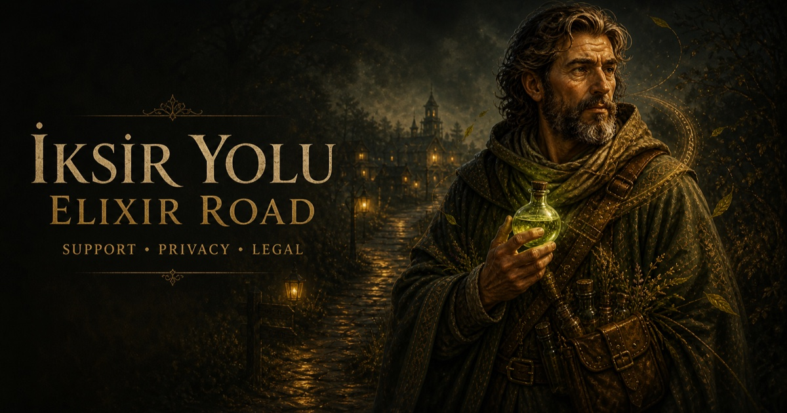
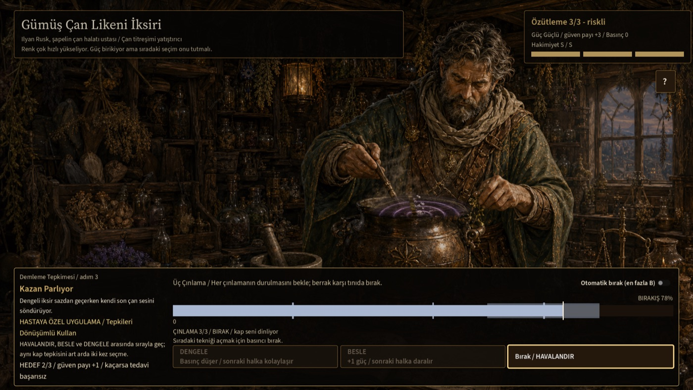
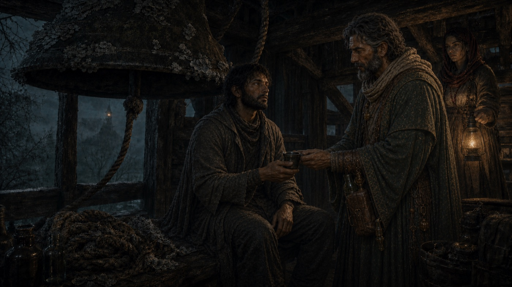
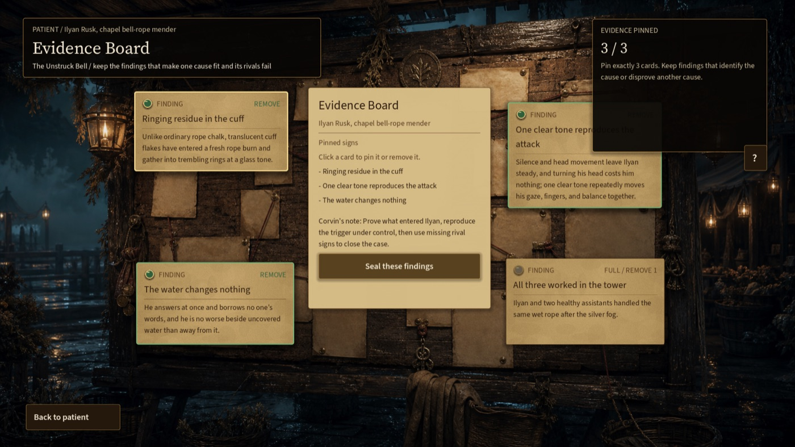
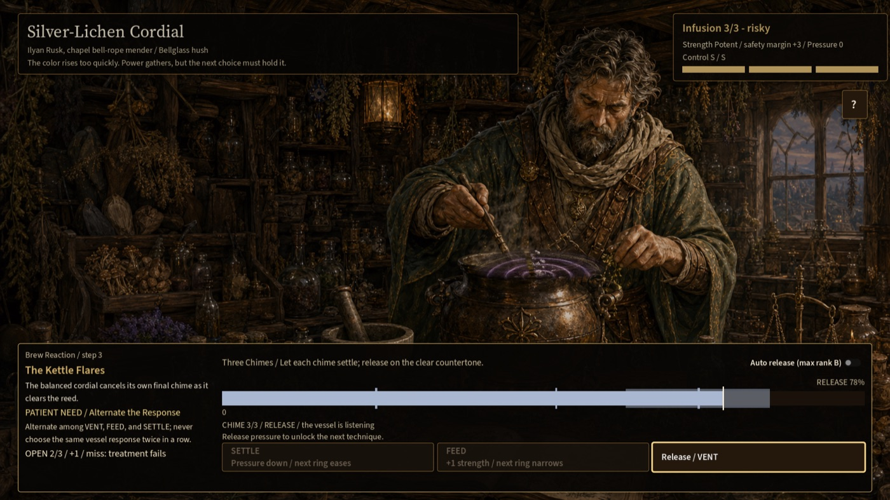

Gözlemle
Observe
Hastanın sözünü, çevresini ve bedenindeki küçük işaretleri oku.
Read the patient's words, surroundings, and smallest physical signs.
Drenova seni çağırıyor
Drenova is calling
İmkânsız belirtileri çöz, doğru malzemeleri seç ve her tedavinin bir köyde bıraktığı izi gör. İksir Yolu, yol eczacılığına dayalı sinematik bir teşhis ve hazırlama oyunudur.
Untangle impossible symptoms, choose the right ingredients, and witness what every treatment leaves behind. Elixir Road is a cinematic diagnosis and brewing game about a travelling healer.

Mevcut mobil sürüm: çevrimdışı · hesap yok · reklam yok · uygulama içi satın alma yok
Current mobile edition: offline · no account · no ads · no in-app purchases
Bir yol eczacısının yöntemi
A travelling healer's method
Oyuncu yalnızca doğru cevabı bulmaz; kanıtı savunur, karışımı kurar ve sonucu yaşar.
You do more than find an answer: defend the evidence, build the mixture, and live with the outcome.
Hastanın sözünü, çevresini ve bedenindeki küçük işaretleri oku.
Read the patient's words, surroundings, and smallest physical signs.
Bir nedeni destekleyen ve rakip açıklamaları çürüten bulguları bağla.
Connect findings that support one cause and disprove its rivals.
Malzemeleri sırala; güç, güvenlik ve basınç arasında denge kur.
Order ingredients and balance strength, safety, and pressure.
Tedavinin hastada ve Drenova'da bıraktığı sonucu gör.
See what the treatment leaves behind in the patient and Drenova.
Vakanın içinden
Inside the case





Yol henüz bitmedi
The road continues
Resmi destek, gizlilik ve sürüm bilgileri bu sitede yayınlanır.
Official support, privacy, and release information is published on this site.